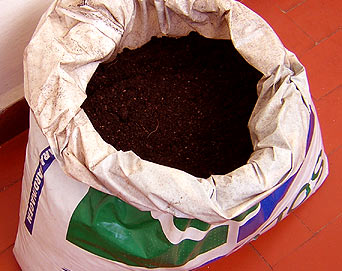

Mudas Nativas
O que é ?
As sementes das espécies nativas são obtidas junto ao IPEF (Instituto de Pesquisa e Estudo Florestal) da USP de Piracicaba (Universidade de São Paulo - Campos de Piracicaba/SP) e no Instituto Florestal de São Paulo.
As duas instituições são conceituados bancos de sementes, que podem germinar em estufas ou casas de vegetação. Elas são colocadas em canteiros germinadores compostos por moinha de carvão e areia fina lavada. Após brotarem, são transplantadas para tubetes com 2 a 5 cm de altura, determinados de acordo com a espécie em questão.
Após 40 dias do transplante, em média, as mudas devem ser espaçadas para evitar o estiolamento, causado por competição pela incidência de luz. Durante toda esta etapa, as irrigações são feitas três vezes ao dia com microaspersores.
As adubações com NPK começam a partir do surgimento do segundo par de folhas nas mudas e são procedidas a cada 15 dias.
No viveiro, algumas espécies, como o Ipê Rosa, não se desenvolvem bem se as temperaturas e a umidade forem elevadas. Para ela, portanto, indica-se cobertura com sombrite 50%. Já ao ar livre, as mudas chegam pouco antes de atingirem ponto ideal de comercialização, onde permanecem expostas ao tempo, porém irrigadas. Só que, a partir daí, as regas são mais espaçadas de modo a se promover a rustificação das plantas, que precisam desta característica para suportar bem o transporte e o plantio.
Terra Orgânica
O que é ?
O mundo está cada vez mais rápido e o homem, por necessidade, acompanha a rapidez das máquinas em sua vida. Nesse processo, o homem é desvirtuado do processo produtivo particular de produção de comida, tornando-se ou um consumidor ou um produtor capitalista de gêneros alimentares.
Nessa nova ordem econômica, não há mais espaço, ou justificativa econômica de mercado para o pequeno produtor ou o produtor da própria comida. O movimento orgânico nasce para se opor a esse sistema vigente.
Qualidade de vida. Para os adeptos do movimento orgânico, um mundo cada vez mais automatizado e dependente da tecnologia não exclui a viabilidade de uma produção sustentável, que respeite o solo, o ar, as matrizes energéticas e principalmente o ser humano.
A produção orgânica age em verdade contra os efeitos perversos da contemporaneidade, incluindo entre as idéias de seus defensores, conceitos religiosos, econômicos, ecológicos, práticos e ideológicos; sendo o exemplo religioso o budismo, o econômico a inserção de renda em famílias pobres e a quebra do cartel do oligopólio da Bayer e Monsanto, do ecológico a proteção do solo contra erosão e lixiação, além da proteção das águas dos rios, do prático a possibilidade de plantar em terrenos particulares e se aproximar da terra e do ideológico, a crença em um mundo melhor possibilitado por uma produção que favoreça uma melhor qualidade de vida e a sustentabilidade do ambiente.
Topo /\
|